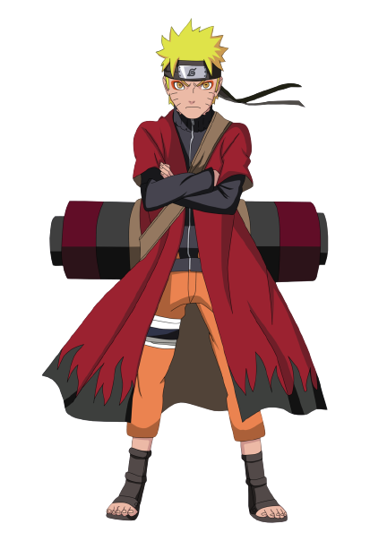
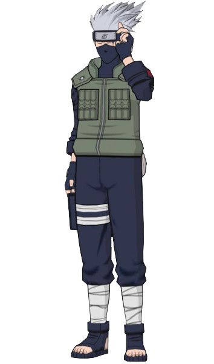
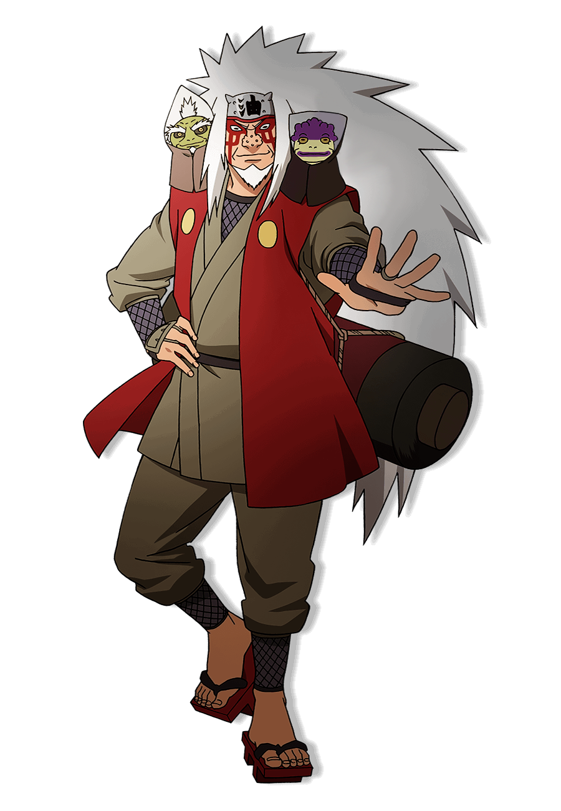
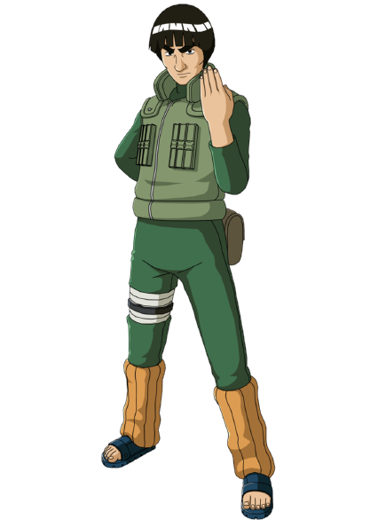
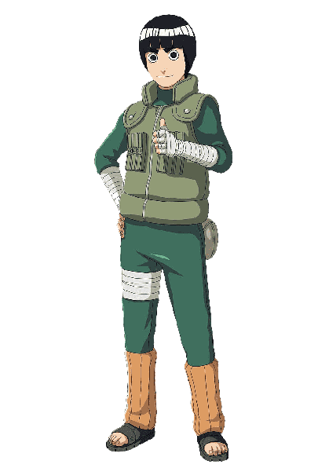
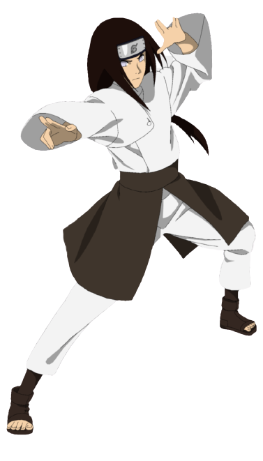
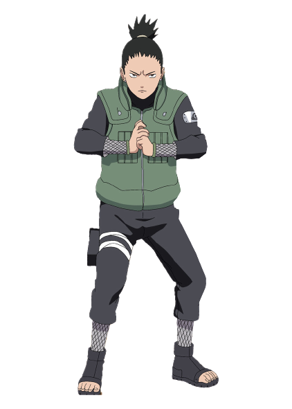
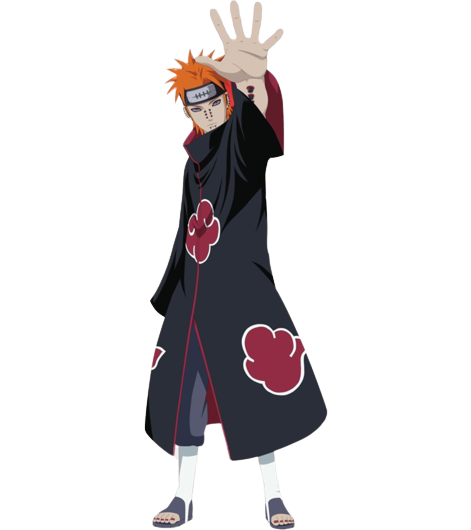

- Nome: Naruto
- Clan: Uzumaki
- Idade: 17
- Isninja: True
- Ninjutsus: Clones das Sombras, Jutsu Sexy

- Nome: Kakashi
- Clan: Hatake
- Idade: 28
- Isninja: False
- Ninjutsus: Copiar Habilidades, Chidori

- Nome: jiraiya
- Clan: Hatake
- Idade: 51
- Isninja: False
- Ninjutsus: Rasengan, Odama Rasengan

- Nome: Maito Gai
- Clan: Sem Clan
- Idade: 28
- Isninja: True
- Ninjutsus: Os Noves Portões

- Nome: Rock Lee
- Clan: Sem Clan
- Idade: 17
- Isninja: True
- Ninjutsus: Só Tem Taijuts

- Nome: Neji Hyuga
- Clan: Hyuga
- Idade: 17
- Isninja: False
- Ninjutsus: Oito Trigamas, Emissão de Chakara

- Nome:Shikamaru
- Clan: Nara
- Idade: 26
- Isninja: True
- Ninjutsus: Técnica de Imitação Pela Sombra, Técnica da Captura pela Sombra

- Nome: Nagato Pain
- Clan: Uzumaki
- Idade: 32
- Isninja: False
- Ninjutsus: Jutsus Absorção da Alma, Técnica da Vida Celestial